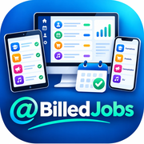

@BilledJobs
Ouvrir @BilledJobsMettre l'icône sur l'écran d'accueil
iPad, iPhone : dans Safari, Partager, puis « Sur l'écran d'accueil ».
Android : dans Chrome, menu ⋮, puis « Ajouter à l'écran d'accueil ».
Si Google refuse l'accès
Seuls les comptes Google autorisés ouvrent l'application. Connectez-vous avec l'un d'eux, ou ouvrez cette page dans un onglet privé et connectez-vous au bon compte.
Si Google affiche « Vous n'êtes pas autorisé à accéder au document demandé. » ou « Impossible d'ouvrir le fichier pour le moment. », un autre compte est sans doute connecté dans ce navigateur : ouvrez cette page dans un onglet privé et connectez-vous seulement au bon compte.